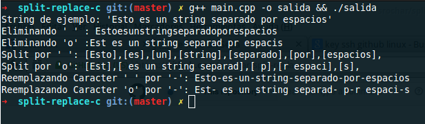

Jugando con string en c++
En un ramo de la universidad tuvimos que usar c++ con string. Se volvio complicado cuando necesitaba separar el string por espacio o por otro caracter. En python esta función se llama split, que es muy fácil de usar y además viene implementada. Lastima que en c++ no exita, pero no me quede ahí, las implemente y les muestro los resultados.
El aburrimiento resulto que implementará otras dos funciones muy utilizadas, en conclusión creé:
- Replace: Sirve para reemplzar un caracarter por otro en un string.
- Split: Retorna el string en un vector, separado por un char(delimitador).
- DeleteChar: Eliminar un carácter de un string.
En fin acá el código con las funciones y un main simple para que vean como funcionan:
//============================================================================
// Name : main.cpp
// Author : Srochar
// Description : Implementando split,replace y eliminar caracter en string
//============================================================================
#include <iostream>
#include <string>
#include <vector>
#include <sstream>
using namespace std;
/*
* split, es un funcion que separa un string, por un determinado. Se retorna un vector.
* Buscamos la posicion del delimitador, separando el string principal en dos daba la posicion del
* delimitador. El primer trozo lo agregamos al vector y redifinimos el string principal por la otra mitad
* así hasta que no encontremos delimitador
* */
vector<string> split(string data,char delimi)
{
vector<string> result;
string sub;
size_t pos, noEncontrado = -1;
do {
pos = data.find(delimi);
sub = data.substr(0,pos);
result.push_back(sub);
data = data.substr(pos+1,data.length());
} while (pos != noEncontrado);
return result;
}
/*
* deleteChar una funcion simple que eliminar un char de un string.
* Buscamos la posicion del char que deseamos eliminar. Generamos dos partes según la posición.
* Y simplemente el resultado es la union del primer string y con la segunda pero una posición más.
* */
string deleteChar(string data,char noChar)
{
//stringstream nos facilita la creacion de un string; con la entrada de varios otros string por el operador <<
stringstream result;
string sub;
size_t pos, noEncontrado = -1;
do {
pos = data.find(noChar);
sub = data.substr(0,pos);
result << sub;
data = data.substr(pos+1,data.length());
} while (pos != noEncontrado);
return result.str();
}
/*
* replaceChar reeplaza un char de un string
* Funciona igual que deleteChar solo que agregamos un new_char y volvemos a agregar el segundo string.
* */
string replaceChar(string data, char old_char, char new_char)
{
stringstream result;
string sub;
size_t pos, noEncontrado = -1;
do {
pos = data.find(old_char);
sub = data.substr(0,pos);
result << sub << new_char;
data = data.substr(pos+1,data.length());
} while (pos != noEncontrado);
sub = result.str();
//debemos eliminar el último caracter, porque se agrega un new_char de más.
sub = sub.substr(0,sub.length()-1);
return sub;
}
int main()
{
string p = "Esto es un string separado por espacios";
string sin_espacio = deleteChar(p,' ');
string sin_o = deleteChar(p,'o');
vector<string> sinEspacio = split(p,' ');
vector<string> sinO = split(p,'o');
vector<string>::size_type it;
string replace_spaceporguion = replaceChar(p,' ','-');
string replace_oporguion = replaceChar(p,'o','-');
cout << "String de ejemplo: "<<"'" << p << "'" << endl;
cout << "Eliminando ' ' : " << sin_espacio << endl;
cout << "Eliminando 'o' :" << sin_o << endl;
cout << "Split por ' ': ";
for (it = 0; it != sinEspacio.size(); ++it)
cout << "[" << sinEspacio[it] << "],";
cout << endl;
cout << "Split por 'o': ";
for (it = 0; it != sinO.size(); ++it)
cout << "[" << sinO[it] << "],";
cout << endl;
cout << "Reemplazando Caracter ' ' por '-': " << replace_spaceporguion << endl;
cout << "Reemplazando Caracter 'o' por '-': " << replace_oporguion << endl;
}
Resultado: 
Dejo el github también para que puedan descargar el código. Saludos!
comments powered by Disqus